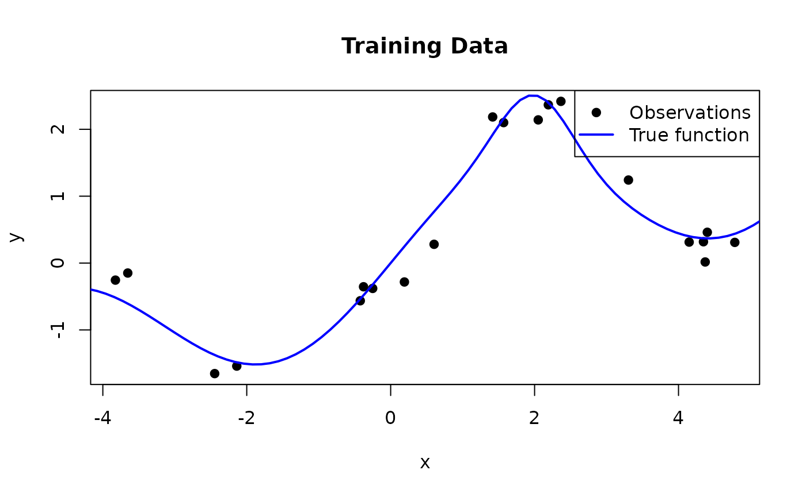
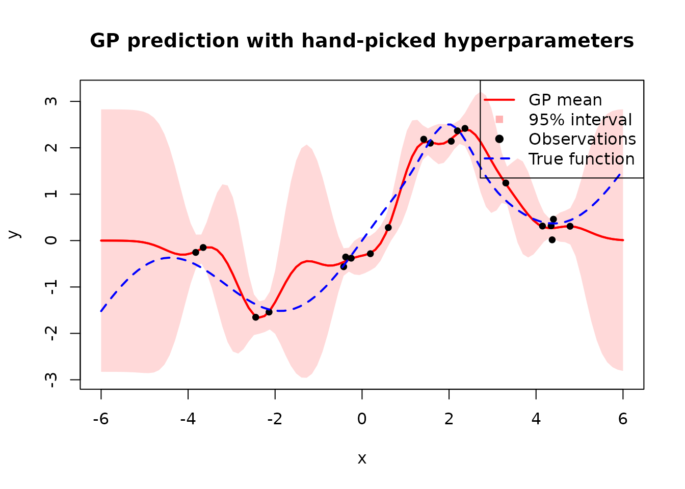
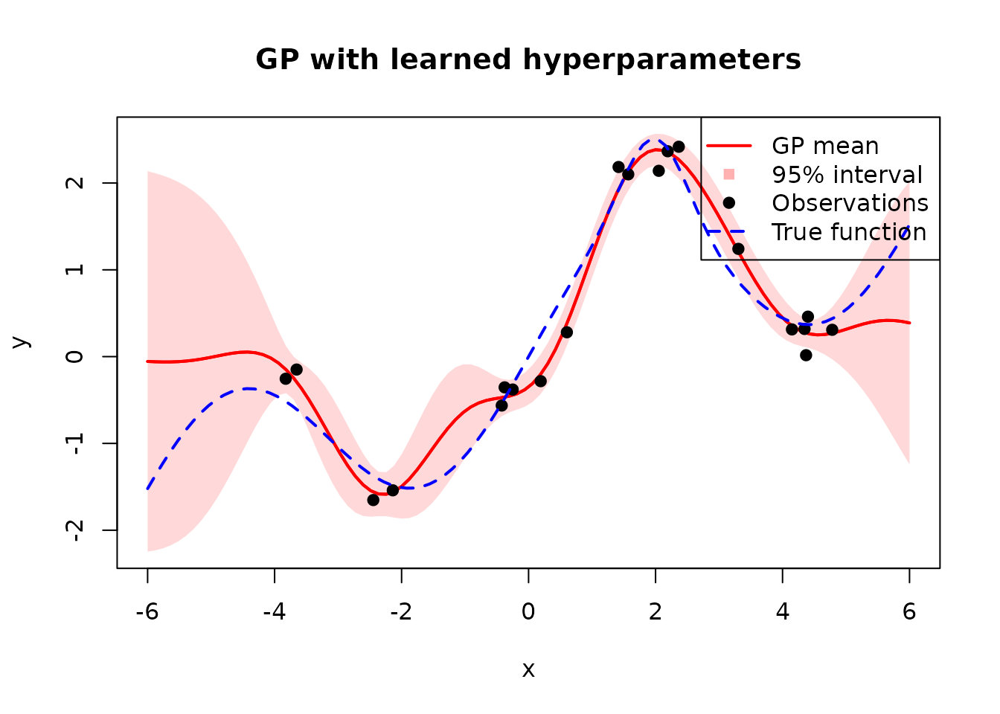
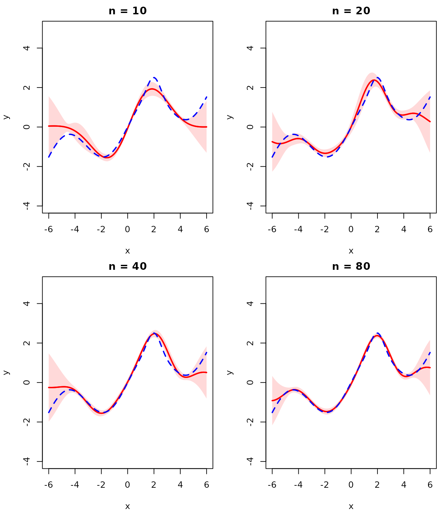

In this vignette, we implement a Gaussian Process (GP) regression model from scratch.
A Gaussian Process is a collection of random variables, any finite subset of which follows a joint Gaussian distribution. A GP is fully specified by a mean function \(m(\mathbf{x})\) and a covariance (kernel) function \(k(\mathbf{x}, \mathbf{x}')\):
\[f(\mathbf{x}) \sim \mathcal{GP}\bigl(m(\mathbf{x}),\; k(\mathbf{x}, \mathbf{x}')\bigr)\]
For any finite set of inputs \(\{\mathbf{x}^{(1)}, \dots, \mathbf{x}^{(n)}\}\), the corresponding function values \(\mathbf{f} = [f(\mathbf{x}^{(1)}), \dots, f(\mathbf{x}^{(n)})]^\top\) are jointly Gaussian:
\[\mathbf{f} \sim \mathcal{N}\bigl(\mathbf{m},\; \mathbf{K}\bigr)\]
where \(\mathbf{m}_i = m(\mathbf{x}^{(i)})\) and \(\mathbf{K}_{ij} = k(\mathbf{x}^{(i)}, \mathbf{x}^{(j)})\). We assume a zero mean function \(m(\mathbf{x}) = 0\) throughout this vignette (which is standard practice, since the kernel already provides enough flexibility).
Kernel
We use the squared exponential (also called RBF) kernel:
\[k(\mathbf{x}, \mathbf{x}') = \sigma_f^2 \exp\!\left(-\frac{\|\mathbf{x} - \mathbf{x}'\|^2}{2 \ell^2}\right)\]
There are also many other kernels that can be used, such as the Matérn kernel, the periodic kernel, and the exponential cosine kernel. Below, we implement a function that computes the kernel matrix for two sets of points:
library(anvil)
# X1: (n, d) tensor
# X2: (m, d) tensor
# lengthscale, signal_var: () tensor
rbf_kernel_matrix <- function(X1, X2, lengthscale, signal_var) {
n <- shape(X1)[1L]
m <- shape(X2)[1L]
d <- shape(X1)[2L]
diff <- nv_broadcast_tensors(
nv_reshape(X1, c(n, 1L, d)),
nv_reshape(X2, c(1L, m, d))
)
diff <- diff[[1L]] - diff[[2L]]
sq_dist <- nv_reduce_sum(diff * diff, dims = 3L)
signal_var * exp(-sq_dist / (2 * lengthscale^2))
}Because anvil jit-compiles the code, there is no
performance penalty for custom kernels, other than if we would use a C++
library that has a number of hard-coded kernels available.
Joint Distribution
Suppose we have \(n\) training inputs collected in a design matrix \(\mathbf{X}\) and the corresponding function values \(\mathbf{f} = [f(\mathbf{x}^{(1)}), \dots, f(\mathbf{x}^{(n)})]^\top\). We observe noisy targets \(\mathbf{y} = \mathbf{f} + \pmb{\epsilon}\), where \(\pmb{\epsilon} \sim \mathcal{N}(\mathbf{0}, \sigma^2 \mathbf{I})\). Given \(n_*\) test inputs \(\mathbf{X}_*\), we want to predict the latent function values \(\mathbf{f}_* = [f(\mathbf{x}_*^{(1)}), \dots, f(\mathbf{x}_*^{(n_*)})]^\top\). Assuming a zero-mean GP prior \(\mathcal{GP}(\mathbf{0}, k(\mathbf{x}, \mathbf{x}'))\), the joint distribution of the observed values and the latent test values is:
\[\begin{bmatrix} \mathbf{y} \\ \mathbf{f}_* \end{bmatrix} \sim \mathcal{N}\!\left( \mathbf{0},\; \begin{bmatrix} \mathbf{K} + \sigma^2 \mathbf{I} & \mathbf{K}_* \\ \mathbf{K}_*^\top & \mathbf{K}_{**} \end{bmatrix} \right)\]
where \(\mathbf{K} = \bigl(k(\mathbf{x}^{(i)}, \mathbf{x}^{(j)})\bigr)_{i,j}\) is the \(n \times n\) training kernel matrix, \(\mathbf{K}_* = \bigl(k(\mathbf{x}^{(i)}, \mathbf{x}_*^{(j)})\bigr)_{i,j}\) is the \(n \times n_*\) cross-covariance between training and test points, and \(\mathbf{K}_{**}\) is the \(n_* \times n_*\) kernel matrix among test points.
Posterior Predictive Distribution
We want to infer the distribution of \(\mathbf{f}_*\) given the observed data \(\mathbf{y}\). By applying the general rule for conditioning of Gaussian random variables to the joint distribution above, we obtain the posterior predictive distribution:
\[\mathbf{f}_* \mid \mathbf{X}, \mathbf{y}, \mathbf{X}_* \sim \mathcal{N}(\pmb{\mu}_*, \pmb{\Sigma}_*)\]
with
\[\pmb{\mu}_* = \mathbf{K}_*^\top \mathbf{K}_y^{-1} \mathbf{y}\] \[\pmb{\Sigma}_* = \mathbf{K}_{**} - \mathbf{K}_*^\top \mathbf{K}_y^{-1} \mathbf{K}_*\]
where \(\mathbf{K}_y := \mathbf{K} + \sigma^2 \mathbf{I}\).
The mean \(\pmb{\mu}_*\) is a linear combination of the training observations, weighted by the kernel similarity between the test and training points. The covariance \(\pmb{\Sigma}_*\) is the prior covariance minus a term that shrinks the uncertainty wherever training data is available.
Note that prediction is purely a matter of matrix computation — given the kernel hyperparameters, all quantities follow directly from the formulas above.
We now apply this to a synthetic example. We generate training data from a function that combines a sinusoid with a linear trend and a localized bump:
\[f(x) = \sin(x) + 0.3\,x + \exp\!\left(-2\,(x - 2)^2\right)\]
set.seed(42)
true_fn <- function(x) sin(x) + 0.3 * x + exp(-2 * (x - 2)^2)
n_train <- 20
noise_sd <- 0.2
X_train <- sort(runif(n_train, -5, 5))
y_train <- true_fn(X_train) + rnorm(n_train, sd = noise_sd)
n_test <- 100
X_test <- seq(-6, 6, length.out = n_test)
The predict_gp function implements the posterior
predictive formulas using nv_solve to solve the linear
systems involving \(\mathbf{K}_y\)
rather than explicitly inverting the kernel matrix.
predict_gp <- jit(function(kernel, X_train, y_train, X_test, lengthscale, signal_var, noise_var) {
n <- shape(X_train)[1L]
K <- kernel(X_train, X_train, lengthscale, signal_var)
K_y <- K + noise_var * nv_eye(n, dtype = dtype(K))
K_s <- kernel(X_test, X_train, lengthscale, signal_var)
K_ss <- kernel(X_test, X_test, lengthscale, signal_var)
# Predictive mean: K_s %*% K_y^{-1} %*% y
alpha <- nv_solve(K_y, y_train)
mu <- K_s %*% alpha
# Predictive covariance: K_ss - K_s %*% K_y^{-1} %*% K_s^T
v <- nv_solve(K_y, t(K_s))
cov <- K_ss - K_s %*% v
list(mu = mu, cov = cov)
}, static = "kernel")We apply this with \(\ell = 0.5\), \(\sigma_f^2 = 2\), and \(\sigma^2 = 0.04\):
X_t <- nv_tensor(matrix(X_train, ncol = 1))
y_t <- nv_tensor(matrix(y_train, ncol = 1))
X_test_t <- nv_tensor(matrix(X_test, ncol = 1))
pred <- predict_gp(
rbf_kernel_matrix, X_t, y_t, X_test_t,
lengthscale = nv_scalar(0.5),
signal_var = nv_scalar(2),
noise_var = nv_scalar(0.04)
)
Next, we will focus on learning these parameters by maximizing the marginal likelihood.
Marginal Likelihood
With \(\pmb{\theta} = (\ell, \sigma_f^2, \sigma^2)\), we can write down the log marginal likelihood as follows:
\[p(\mathbf{y} \mid \mathbf{X}, \pmb{\theta}) = \int p(\mathbf{y} \mid \mathbf{f}, \mathbf{X}) \, p(\mathbf{f} \mid \mathbf{X}, \pmb{\theta}) \, d\mathbf{f}\]
Because both the likelihood \(p(\mathbf{y} \mid \mathbf{f}) = \mathcal{N}(\mathbf{f}, \sigma^2 \mathbf{I})\) and the prior \(p(\mathbf{f}) = \mathcal{N}(\mathbf{0}, \mathbf{K})\) are Gaussian, this integral has a closed-form solution:
\[\log p(\mathbf{y} \mid \mathbf{X}, \pmb{\theta}) = \underbrace{-\tfrac{1}{2} \mathbf{y}^\top \mathbf{K}_y^{-1} \mathbf{y}}_{\text{data fit}} \;\underbrace{- \tfrac{1}{2} \log |\mathbf{K}_y|}_{\text{complexity penalty}} \;\underbrace{- \tfrac{n}{2} \log 2\pi}_{\text{constant}}\]
The three terms have interpretable roles, which can be understood by considering how they behave as the lengthscale \(\ell\) increases (i.e. the model becomes smoother and less flexible):
- The data fit \(-\frac{1}{2} \mathbf{y}^\top \mathbf{K}_y^{-1} \mathbf{y}\) measures how well the model explains the observations. A small \(\ell\) allows the GP to interpolate the data closely, giving a good fit; a large \(\ell\) produces an overly smooth function that fits the data poorly.
- The complexity penalty \(-\frac{1}{2} \log |\mathbf{K}_y|\) depends only on the covariance function and increases with the lengthscale, because a smoother model is less complex (higher penalty value means less penalization). A small \(\ell\) leads to a flexible model with a large \(|\mathbf{K}_y|\) and thus a heavy penalty.
- The constant \(-\frac{n}{2} \log 2\pi\) is a normalization term independent of \(\pmb{\theta}\).
Below, we implement the negative log marginal likelihood but leave out the constant term because we don’t need it for optimization.
neg_log_marginal_likelihood <- function(kernel, X, y, lengthscale, signal_var, noise_var) {
n <- shape(y)[1L]
K <- kernel(X, X, lengthscale, signal_var)
eye <- nv_eye(n, dtype = dtype(K))
K_y <- K + noise_var * eye
L <- nv_cholesky(K_y, lower = TRUE)
# alpha = K_y^{-1} y
alpha <- nv_solve(K_y, y)
# Data fit term: 0.5 * y^T %*% alpha
data_fit <- 0.5 * nv_reduce_sum(y * alpha, dims = c(1L, 2L))
# Log determinant: sum(log(diag(L)))
diag_L <- nv_reduce_sum(L * eye, dims = 2L)
log_det <- nv_reduce_sum(log(diag_L), dims = 1L)
data_fit + log_det
}Optimization
We optimize the hyperparameters using gradient descent. Since \(\ell\), \(\sigma_f^2\), and \(\sigma^2\) must be positive, we optimize on
the log scale to allow unconstrained updates. anvil
computes the gradients via gradient() and the entire
training loop is JIT-compiled with nv_while.
params <- c("log_lengthscale", "log_signal_var", "log_noise_var")
nll_grad <- gradient(\(X, y, log_lengthscale, log_signal_var, log_noise_var) {
neg_log_marginal_likelihood(
rbf_kernel_matrix, X, y,
exp(log_lengthscale), exp(log_signal_var), exp(log_noise_var)
)
}, wrt = params)
train_gp <- jit(function(X, y, lengthscale, signal_var, noise_var,
n_steps, learning_rate) {
result <- nv_while(
list(
log_lengthscale = log(lengthscale),
log_signal_var = log(signal_var),
log_noise_var = log(noise_var),
step = 0L
),
\(log_lengthscale, log_signal_var, log_noise_var, step) step < n_steps,
\(log_lengthscale, log_signal_var, log_noise_var, step) {
grads <- nll_grad(X, y, log_lengthscale, log_signal_var, log_noise_var)
list(
log_lengthscale = log_lengthscale - learning_rate * grads$log_lengthscale,
log_signal_var = log_signal_var - learning_rate * grads$log_signal_var,
log_noise_var = log_noise_var - learning_rate * grads$log_noise_var,
step = step + 1L
)
}
)
list(
lengthscale = exp(result$log_lengthscale),
signal_var = exp(result$log_signal_var),
noise_var = exp(result$log_noise_var)
)
})
result <- train_gp(
X_t, y_t,
lengthscale = nv_scalar(1),
signal_var = nv_scalar(1),
noise_var = nv_scalar(exp(-1)),
n_steps = nv_scalar(500L),
learning_rate = nv_scalar(0.01)
)
result## $lengthscale
## AnvilTensor
## 1.0904
## [ CPUf32{} ]
##
## $signal_var
## AnvilTensor
## 1.2431
## [ CPUf32{} ]
##
## $noise_var
## AnvilTensor
## 0.0303
## [ CPUf32{} ]Results
Now we can use the learned hyperparameters for prediction just like we have done above and visualize the results.

Compared to the hand-picked hyperparameters, the learned ones produce a much better fit with tighter uncertainty bands near the training data and wider bands where data is sparse.
Convergence with More Data
As the number of observations increases, the GP posterior should converge to the true function and the uncertainty should shrink. We demonstrate this by re-fitting the hyperparameters for each dataset size. Since we only sample training points within \([-5, 5]\), the uncertainty grows beyond that range where no data is available.

With more observations the GP mean closely tracks \(f(x)\) and the uncertainty bands become negligibly thin, confirming convergence to the true function.
Further Reading
For a more in-depth treatment of Gaussian Processes, see the Introduction to Machine Learning lecture on Gaussian Processes.